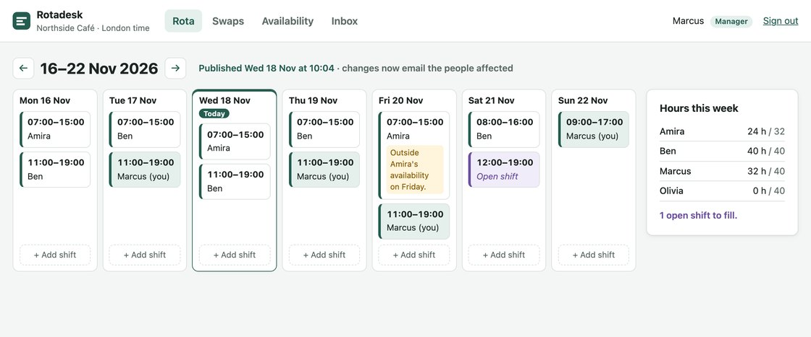
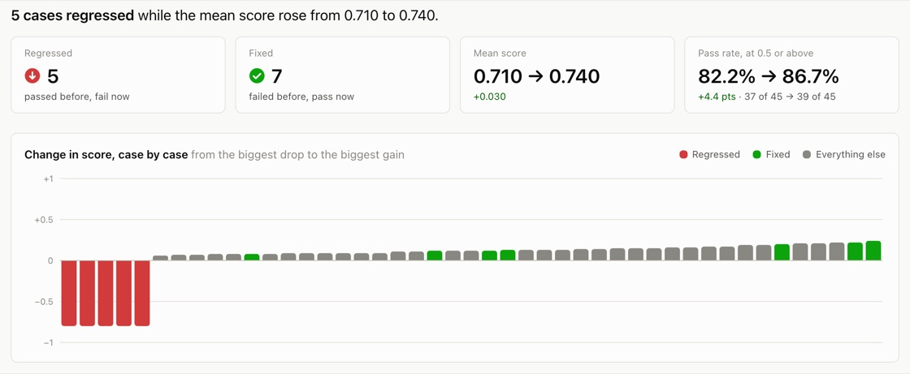
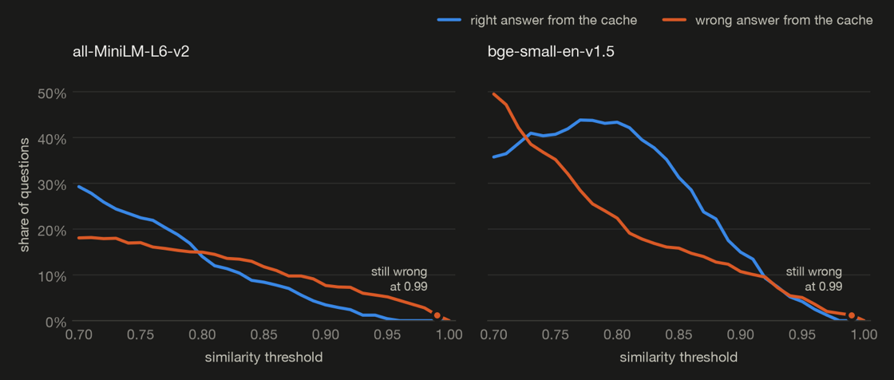

Hi, I'm Mohsin
Software engineer building backend systems on Azure and .NET, and open-source tools for LLM apps.
Mohsin's portfolio
Backend systems. Cloud pipelines. Tools for LLM apps.
Selected work
-

Staff scheduling for small businesses, one app for many of them, with each business's data kept apart.
-
$ docker compose run --rm demo 1. Fallback: ask the "resilient" policy for an answer x-router-model budget x-router-attempts 4 2. The cap: ten expensive requests at the same moment answered 3 refused 7 (HTTP 429, before reaching the model)One endpoint for many language models, with a spending cap that holds under concurrent load.
-

Compares two eval runs case by case, and shows exactly what got worse.
-

Caches model answers by meaning, with a benchmark that shows where it starts giving wrong answers.
-
SwaggerGen/SchemaGenerator/SchemaGeneratorOptions.cs IEnumerable<Type> DefaultSubTypesSelector(Type baseType) => baseType.Assembly.GetTypes() - .Where(type => type.IsSubclassOf(baseType)); + .Where(type => type.IsSubclassOf(baseType) + && !type.ContainsGenericParameters);
Fixed five bugs in the Swagger and OpenAPI library for ASP.NET Core. All five merged, and the first three shipped in v11.0.0.
-
src/StackExchange.Redis/RedisBatch.cs foreach (var pair in byBridge) { + foreach (var message in pair.Value) + { + multiplexer.AttachProfiling(message, pair.Key.ServerEndPoint); + }
Fixed a bug in the most widely used Redis client for .NET. Merged the same day, and shipped in release 3.4.29.
Say hello.
Have a role, a project or a question? Email is the fastest way to reach me.